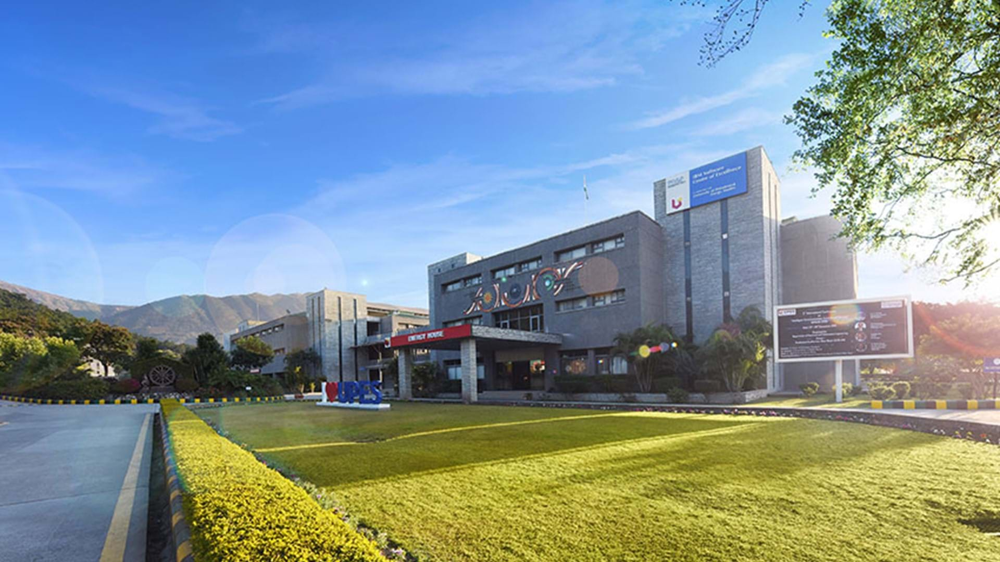

A brief about our academic institution set up in the beautiful landscape of Dehradun
History
UPES, established in 2003, is a private university located in Dehradun, Uttarakhand, India. It is known for offering specialized undergraduate and postgraduate programs in fields related to energy, petroleum, engineering, management, law, and more. The university has gained recognition for its focus on the energy sector, including oil and gas, power, and infrastructure.
Campus
UPES has a well-equipped and modern campus with state of the art infrastructure, academic blocks, laboratories, library, accomodations with recreational and dining facilities all with the scenic setting of the landscape of Uttarakhand.

Academics
The University of Petroleum and Energy Studies (UPES) in Dehradun is renowned for its specialized academic programs focused on energy, petroleum, engineering, management, law, and related disciplines. Established in 2003, UPES provides a curriculum aligned with industry needs, emphasizing practical skills and industry exposure. The faculty, often industry experts, contribute to a robust learning environment. The university encourages research, innovation, and collaborations with industry leaders, offering students opportunities for internships and global perspectives. UPES is known for its modern infrastructure, including labs and libraries, providing a holistic education experience that combines theoretical knowledge with practical applications.

Thank You!